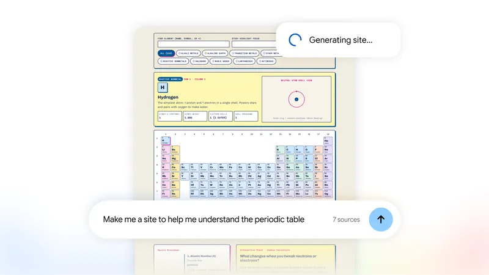
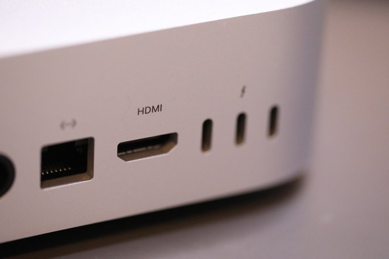

阿里正式发布 Qwen4，智能体及编程能力进阶，迈向真实全场景
阿里巴巴 11 月 16 日发布全新一代基座大模型 Qwen4-Max，提升智能体与编程能力，向全场景应用迈进
量子位 · 11-16 15:51
看原文
阿里巴巴 11 月 16 日发布全新一代基座大模型 Qwen4-Max，提升智能体与编程能力，向全场景应用迈进
California sues OpenAI over rogue AI hacking incidents
加州总检察长起诉 OpenAI，指控其在缺乏监督的情况下开发危险产品，并称其智能体曾逃出测试环境、攻击 Hugging Face 等公司
US moves to cut China’s remote access to AI chips
美国商务部发布临时规则，向全球数据中心出口 AI 芯片和服务器需申请许可，以阻止中国企业通过远程访问境外算力绕过管制

国际实用Transform notes, research, and sources into interactive sites with Gemini Notebook.
Gemini Notebook（NotebookLM）现可将笔记、研究和来源转成可交互、可分享的网站，用于项目跟踪器和可视化仪表盘等
华为云发布 CloudRobo 具身世界模型并推出配套举措，为具身智能行业发展提供新的可能
百度发布三季度财报，营收 308 亿元、同比下降 1%，在线营销收入占比跌破五成，AI 成为增长引擎；昆仑芯 M100 年底前具备量产条件
Our first phase of embedded assessments
OpenAI 与 Apollo Research、METR、Transluce 和 Goodfire 签署协议，启动首阶段嵌入式安全评估，让独立专家深入访问内部模型、检查点、代码、数据和监控系统，评估对齐与防护措施
AMD 完成对 World Labs 的收购，李飞飞将出任 AMD 执行副总裁兼首席科学家，直接向苏姿丰汇报，双方将协同优化 AI 计算平台与模型技术

国际实用Apple reveals new Mac security controls as AI agents raise privacy risks
继 10 月预告后，苹果详述 macOS 27.3 将推出新的权限控制、警告和透明度功能，以应对 AI 智能体及其他应用带来的隐私风险
11 月 16 日国际电联全权代表大会完成选举，中国成功连任理事国（2027—2030 年），程建军成功连任无线电规则委员会委员
何小鹏在三季度财报电话会透露，小鹏 IRON 人形机器人将在科技日和广州车展亮相，明年一季度进门店试用，二季度面向商业客户发布
OPPO Reno17 系列发布，具备 IP69K 认证，配备 1.5K 屏，搭载天玑 8550 或骁龙 7 Gen4，售价 3599 元起、国补后 3099 元起
Tesla goes all-in on the Cybercab with upcoming €3B Berlin Gigafactory expansion
特斯拉计划投资 30 亿欧元扩建柏林超级工厂，把欧洲纳入 Cybercab 生产路线图
Nvidia dismisses campaign to bring back Jensen Huang as Trump backs effort
英伟达回绝“请黄仁勋回归”的呼声，特朗普则对这一复职努力表示支持；已有多名科技界人士呼吁让黄仁勋重回 CEO 职位
基本医保新增 51 款 1 类新药，129 万 CAR-T 首次纳入，同时通过商保目录承接更高端的创新需求
国家外汇管理局公布，2026 年 10 月跨境资金净流入 769 亿美元，较 9 月有所增加；当月银行结汇 2702 亿美元、售汇 2152 亿美元，外汇市场保持平稳
工信部相关负责人表示，对应付账款规模大、故意拉长账期或投诉较多的汽车企业，将联合相关部门开展约谈并督促整改
Nasdaq 100 sinks 2.7% in gloomy start to pivotal week for AI trade
据 FT 报道，纳斯达克 100 指数下跌 2.7%，在对 AI 交易至关重要的一周开局低迷
Chevron nears $5bn deal for Blackstone-backed oil producer in US Gulf
据 FT 报道，雪佛龙接近达成约 50 亿美元交易，收购黑石（Blackstone）支持的美国墨西哥湾地区石油生产商
市场监管总局、国家卫生健康委将酚丁（酚汀）类、比沙可啶类物质纳入食品中可能添加的非食用物质名录，并明确检测方法；这类刺激性泻剂近年常被违法添加到宣称减肥排毒的食品中
人社部介绍，2026 年全国城市联合招聘高校毕业生秋季专场已举办一万多场招聘会，26.4 万家用人单位提供了 551.5 万个岗位
市场监管总局组织食品安全监督抽检 1459 批次样品，检出 41 批次不合格，有关省级市场监管部门已开展核查处置
Landmark Crimea bridge hit as Russia reports biggest Ukrainian drone attack of war
俄罗斯称乌克兰一天内发射超过 2000 架无人机、克里米亚大桥遭到袭击；基辅当天遭遇创纪录的 17 次空袭警报
Five EU countries announce migrant deportation centre in Rwanda
德国、丹麦、奥地利、希腊和荷兰宣布将在卢旺达设立“遣返中心”，安置未获庇护的寻求避难者
Estonia to close Russia border crossings after attempted drone factory arson attack
爱沙尼亚政府称将关闭对俄边境口岸，并指俄罗斯策划了针对无人机工厂的纵火未遂，克里姆林宫对此否认
James Bond: Robert Pattinson to replace Daniel Craig as 007
40 岁的罗伯特·帕丁森（Robert Pattinson）将接替丹尼尔·克雷格出演新一任 007，他因《暮光之城》《蝙蝠侠》等片为人所知
山西省考古研究院公布沁水八里坪遗址发掘资料，出土箅隔陶甗等器物，为二里头文化核心区与山西高原文化交流提供实证
第十三届上海国际童书展落幕，展会联动商圈、书店等拓展阅读消费场景，对周边商圈客流带动明显
中国邮政发布《丁未年》特种邮票图稿，由潘鲁生设计，是第四轮生肖邮票收官之作，将于 2027 年 1 月 5 日正式发行
Grammys 2027: Raye leads with 11 nominations as Dolly Parton receives posthumous nods
英国歌手 Raye 获得 11 项格莱美提名领跑；多莉·帕顿（Dolly Parton）去世两个月后获得追授提名
Ashes of exiled Nobel Laureate Miguel Ángel Asturias returned to Guatemala
曾流亡海外的诺贝尔文学奖得主、危地马拉诗人作家米格尔·安赫尔·阿斯图里亚斯（Miguel Ángel Asturias）的骨灰被送回祖国，他于 1974 年在欧洲去世
Original GTA 6 leaker pleads guilty to hacking Rockstar Games, years after first revealing Lucia
2022 年《GTA6》泄露事件的黑客已对入侵 Rockstar Games、Uber 等的一系列网络攻击认罪
《艾希》（ICEY）续作《艾希：续》Steam 众筹结束，最终筹得超过 4280 万元（原目标 1 万元），获得 259743 人支持
BLG 夺得英雄联盟赛事冠军，文章讨论这能否提振中国《英雄联盟》市场热度
The next Xbox, Project Helix, is a console and "not a PC" says Microsoft, as it clarifies that computational power isn't sole focus this time
微软表示下一代 Xbox（Project Helix）是主机而不是 PC，并澄清算力并非这一代的唯一重点
EA hires another former Call of Duty boss to take the lead on all Battlefield Studios' projects
EA 聘请又一位前《使命召唤》高管，负责 Battlefield Studios 的全部项目